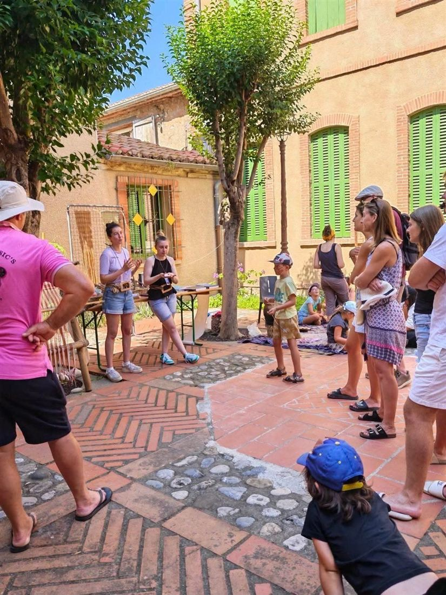
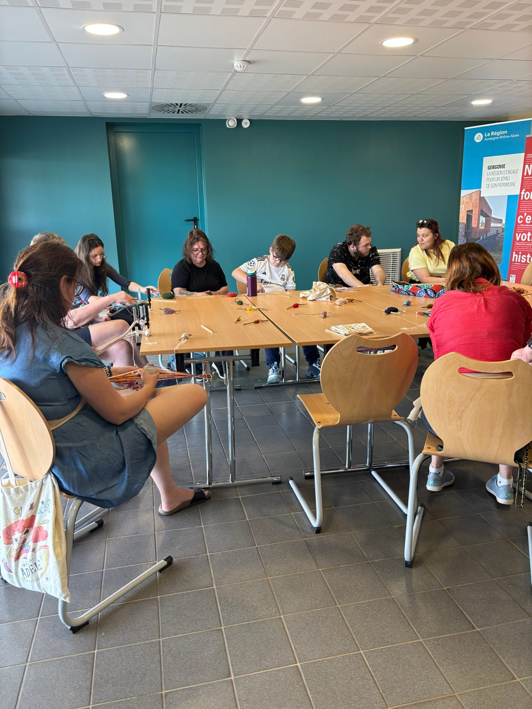
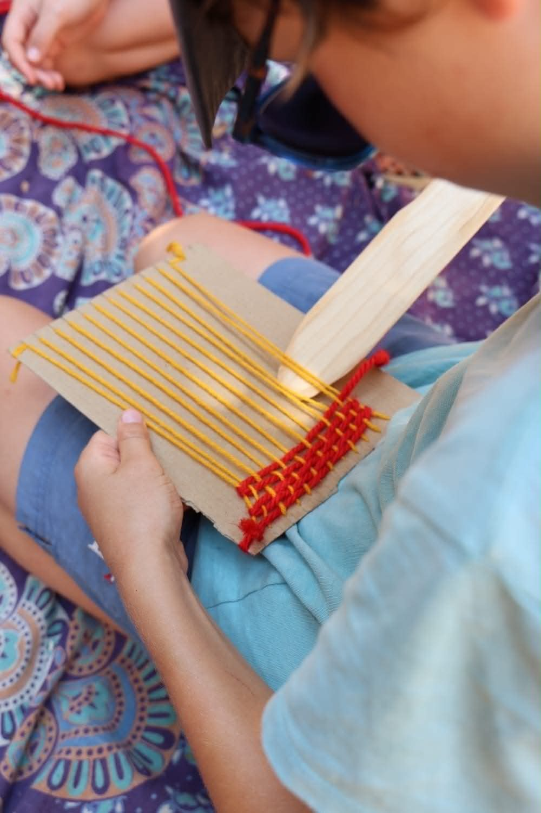
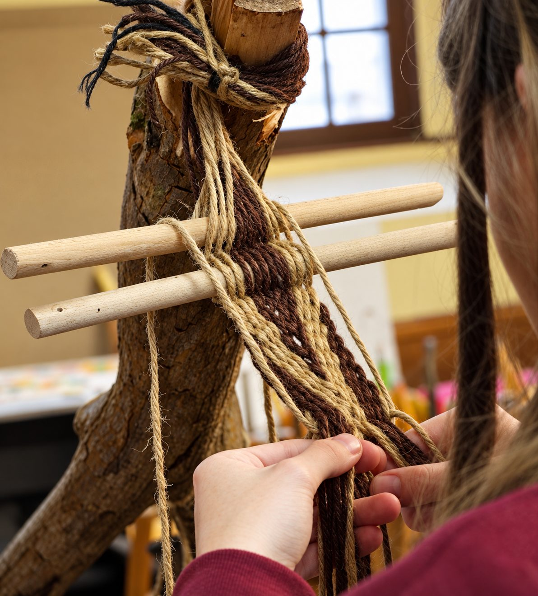
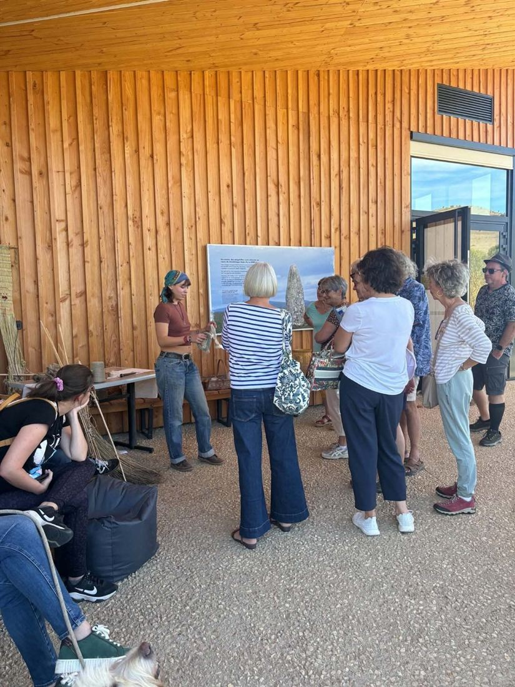

Ateliers
Atelier démonstratif
Filage, tissage et teinture végétale : les grandes étapes de la production textile, de la fibre à l’étoffe, présentées avec les outils et les gestes d’autrefois.
Atelier participatif
Initiez-vous au tissage aux tablettes et réalisez votre propre galon, accompagné pas à pas. Chaque participant repart avec sa création.

Atelier enfant
Tissage sur carton ou teinture végétale : le jeune public découvre le textile par le jeu et la manipulation, et repart avec sa réalisation.

Expérimentation
Des projets d’expérimentation archéologique pour tester des hypothèses sur les techniques textiles anciennes, à destination des chercheurs et des professionnels du patrimoine.

Conférences
À la découverte de l’archéologie des textiles : techniques de fabrication, outils, structures textiles et place des étoffes dans les sociétés du passé.

Des ateliers adaptés à vos projets
Chaque intervention peut être adaptée au public, à la durée souhaitée, au contexte historique et aux objectifs de médiation. Les différents pôles peuvent être proposés indépendamment ou combinés pour construire un parcours de découverte plus complet. Vous souhaitez organiser un atelier avec Néotisse ? Contactez-nous : nous serons ravies de concevoir avec vous une proposition adaptée à vos envies, à vos publics et à vos contraintes.
Nous contacter